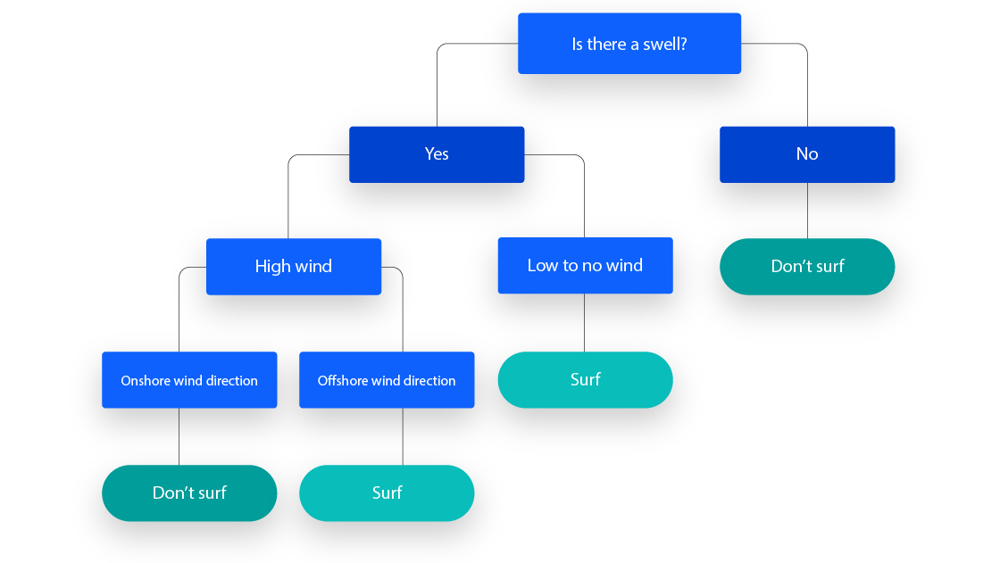
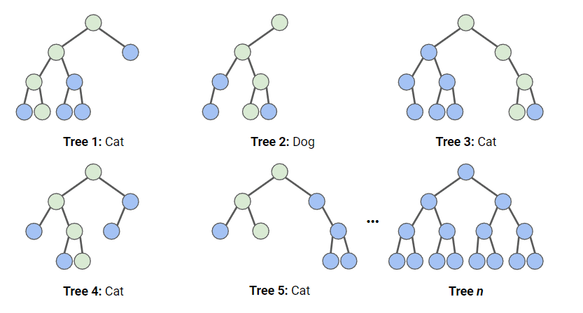

7 Classification of Remotely Sensed Data
7.1 Summary
Our focus in Remote Sensing this week was on classifying remotely sensed data. Broadly speaking, this refers to dividing areas of a remotely sensed image into discrete categories, often at the pixel or sub-pixel level. Although we discussed a number of examples of classifying EO data, such as a study which mapped forest cover change and classified areas with respect to their forest loss/gain (Hansen et al. 2013), most of this week’s lecture was focused on methods of classification, which I will detail below.
7.1.1 Classification Trees
Classification trees are a data structure which allows a given data point to be classified based on its attributes. Not unlike a flowchart, each node of the classification tree poses a question about a data point and each linkage between nodes represents an answer to those questions. Leaf nodes represent the classifications into which a given data point is being sorted.

What distinguishes a classification tree from a flowchart is that there exists a well-defined method to establish their structure, based on a set of predictor variables, or attributes of each data point. From the root node, data is split on a given attribute (and at a given value if the data is continuous) which minimizes the impurity of the resulting set of points at each child node. This process is then repeated at each node to break the data into more granular categories (Loh 2011).
Impurity in this context refers to the homogeneity of the sets resulting from a split, with respect to the levels of their other predictor variables (Laber and Murtinho 2019). As a lose example, if splitting a dataset depending on if its attribute \(X_1\) is greater or less than five, yields datasets which have a higher ‘purity’, or similarity than whether or not boolean attribute \(X_2\) is true or false, then the node splitting \(X_1\) will be closer to the root of the tree.
7.1.2 Regression Trees
Regression trees are like classification trees, but with the key difference that the resulting data does not fall into classifications, or bins, but instead reflect continuous output variables (Loh 2011). This is helpful for situations where the relationship between variables may be locally linear but is broadly disjoint across the range of the predictor variable. A regression tree, then, allows data to be split repeatedly at the point at which the subsets generated have the lowest sum of squared residuals (SSR).
7.1.2.1 Side-note: Overfitting
It’s possible to create a classification or regression tree that subsets data over and over until each category represents a single data point or a handful of extremely homogeneous data points. Such a structure over-fits data based on this specific input dataset and is unlikely to be more generalisable. Two methods to limit this include stopping the further sub-setting of one’s classification tree at a set number of nodes, or by using a method known as weakest link pruning. Without diving into the particular details of the method, its goal is to identify and remove the weakest nodes, that is, nodes which contribute the least to separating data points out into distinct classes.
7.1.3 Random Forests
A random forest is an extension of the classification and regression tree methods, but relies on a large number of randomly generated trees, as opposed to a single decision tree (Biau and Scornet 2016). Trees are randomised because, while constructed according to the rule-sets defined above, each tree is built according to a random subset of data points as well as a subset of data point features (attributes). Additionally, data-points can be used in multiple trees in the forest as well as multiple times within a single tree (Biau and Scornet 2016). The final classification is determined by the category which the highest quantity of trees in the forest assigned to the particular data point.

The broad motivation for random forests are that they reduce the risk of over-fitting by averaging the predictions from a number of uncorrelated models. Additionally, the random forest model often outperforms single decision trees (Biau and Scornet 2016).
7.1.4 Support Vector Machine (SVM)
In a departure from the decision tree paradigm, support vector machines utilise not a tree structure to classify objects but instead divide options within the feature space they occupy (Pisner and Schnyer 2020). In a two-dimensional feature space, this is not unlike linear regression wherein a boundary is drawn in the two-dimensional plane based on a set of observations. That said, it does not identify this line by minimising the sum of squared residuals. Instead, it identifies the line that maximises the margin (which can be thought of as empty space) between the classes (groups) it separates. The points on the boundary of this margin are referred to as ‘support vectors’. support vector machines can also be designed to allow a small number of data points to be misclassified. Although counter-intuitive, allowing errors can make one’s model more generalisable (Pisner and Schnyer 2020).

7.2 Applications in Research
The importance of classification in remote sensing makes it a near ubiquitous phenomena in papers using remote sensing methods. With that said, I’d like to focus on one paper that makes specific use of random forests for classification, and another which deploys support vector machines.
Unlike Hansen et al. (2013), Linhui, Weipeng, and Huihui (2021) make use of random forests not to identify changes in forest cover but to classify forests based on their type. In order to classify forest cover in the Maoershan Nature Reserve (Heilonjiang Province, China), they used imagery from the Gaofen-2 satellite which, after being atmospherically corrected, was fed into a random forest program with 650 trees, with no pruning applied. Six forest types were identified which included ‘Scotch Pine Forest’, ‘Oak Forest’, and ‘Mixed Wood’, to name a few. Interestingly, Linhui, Weipeng, and Huihui (2021) also applied a support vector machine classifier to the same dataset, which yielded 79.86% predictive accuracy as opposed to the 83.16% accuracy reached by the random forest method.
In comparison, Halder, Das, and Basu (2022) use a support vector machine as the primary method of generating a land use and land cover (LULC) classifier to investigate the environmental impact of irrigation products in the Shali reservoir area of Eastern India. They generate six LULC maps ranging from 1995 to 2020 derived from the Landsat platform, before applying cellular automata methods to predict future land use change in the area based on the results of those classifications. In addition to traditional validation methods, Halder, Das, and Basu (2022) also use population, agricultural data, and other non-remotely sensed datasets to validate the classifications created through their SVM classifier.
7.3 Reflection
My previous experience with classification to this point has always been with products like the National Land Cover Database from the USGS, where pixels have already been classified for use. To that end, the actual act of classification has always been a bit of a black box for me. Although it’s perhaps unsurprising, I was surprised to the extent to which the methods commonly deployed are nearly all based in what I think of as machine learning methods. I had expected methods which focused more specifically on the attributes of pixels in each band a sensor might capture as opposed to just segmenting our dataset as ‘purely’ as possible. To that end, I also thought that our classification categories were always preselected instead of identifying natural breaks between potential categories without human input.
While it makes sense in retrospect that ML would be the driving force behind modern classification methods, I do think the point raised in lecture about the explainability of certain methods is a particularly pertinent one. The fact that the application of these classification algorithms could massively overcomplicate what may, depending on the application, be a really simple problem is something that we, as spatial data scientists, need to be aware of. I’m definitely familiar with the desire to simply throw the ‘best’ or ‘most accurate’ tool at a problem even if it’s a bit inappropriate for the application at hand. This is especially true when systems like Earth Engine allow you to select your model and begin training in one or two lines of code. Remembering what it is these algorithms are actually doing, then, will remain crucial.
Finally, the experience of actually performing classification emphasised to me the importance of identifying accurate training data. When selecting parts of my image which I sought to classify to train my model, I was pretty ‘coarse’ in my selection of data and it was immediately obvious to see that I hadn’t been careful enough in capturing my classification types - my training data was all captured perfectly but everything else became a bit of a mess, implying that my model may be over fit on my training dataset.